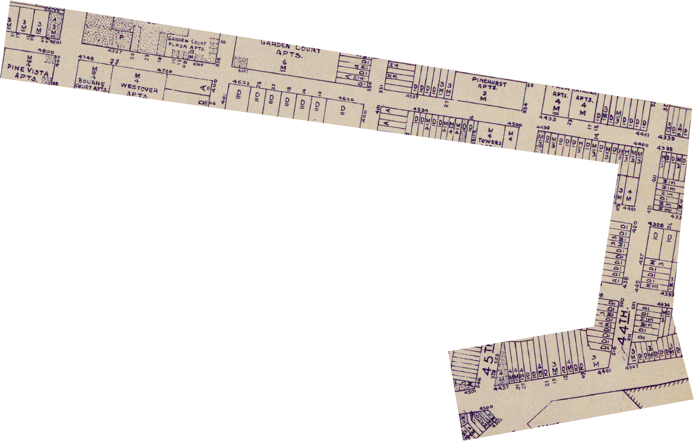
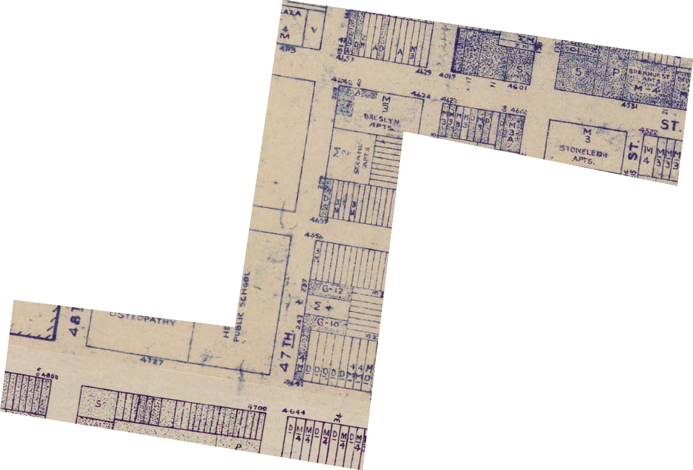
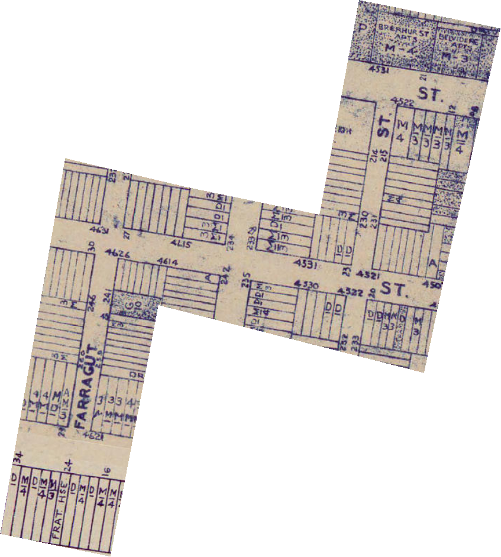

This map is created from a dérive that two friends and I took through part of West Philly. The fragmented map sections are blocks that we walked together. They are separated by the psychogeographic boundaries of the neighborhood.
Field Recording